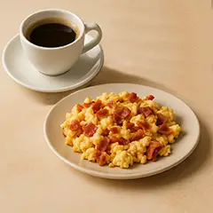
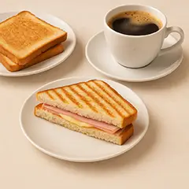

Desayunos en Ciudad Lineal, Madrid
Café, tostadas, bollería, churros, porras, revueltos y sándwiches para empezar el día en Un Toque Gallego.
Dónde desayunar en La Elipa y Ciudad Lineal
Un Toque Gallego es una opción para desayunar en Ciudad Lineal, en el barrio de La Elipa, con propuestas dulces y saladas para cualquier momento de la mañana.
En nuestra carta de desayunos encontrarás café o infusión con bollería, churros o porras, tostadas, zumo de naranja natural, revueltos y sándwiches.
Opciones de desayuno y merienda
Bollería y tostadas
Café o infusión con bollería, tostadas o combinaciones para desayunar de forma sencilla y completa.
Churros y porras
Opciones clásicas de desayuno con café o infusión, perfectas para empezar el día en Madrid.

Revueltos
Revueltos salados para quien busca un desayuno más contundente.

Sándwiches y meriendas
Sándwich mixto, cruasán mixto y otras opciones para desayunar o merendar en Ciudad Lineal.